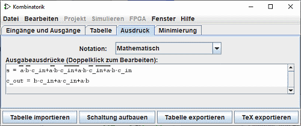
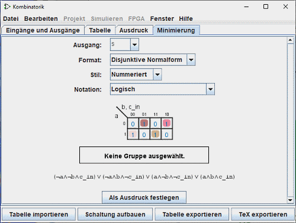

Erstellen von Ausdrücken
Für jede Ausgangsvariable enthält das Fenster zur kombinatorischen Analyse zwei Strukturen - die entsprechende Spalte in der Wahrheitstabelle und ein boolescher Ausdruck - die angeben, wie jede Ausgabe mit den Eingängen zusammenhängt. Sie können die Wahrheitstabelle oder den booleschen Ausdruck bearbeiten, die jeweils andere Struktur wird automatisch entsprechend aktualisiert
Wie wir auf der nächsten Seite sehen werden, sind die booleschen Ausdrücke besonders wichtig, denn die kombinatorische Analyse von Logisim geht von diesen aus, wenn die Schaltung automatisch konstruiert werden soll.
Sie können sich die Ausdrücke mit Hilfe der letzten beiden letzten Registerkarten Ausdruck und Minimierung ansehen und bearbeiten.
Die Registerkarte "Ausdruck"

Auf der Registerkarte Ausdrücke können Sie den aktuellen Ausdruck für jede Ausgabevariable anzeigen und bearbeiten. Es enthält einen Notation:-Selektor und eine Liste der mathematischen Ausdrücke der Schaltung.
Der Selektor Notation: ändert den Notationsmodus der Ausgabeausdrücke. Sie können aus fünf Notationstypen wählen:
- Mathematisch :
- Die hervorgehobene stellt die Negation, die ∙ die UND-Funktion und die + die ODER-Funktion dar. ⊕ die XOR-Funktion
- Logisch :
- Das ¬ steht für die Negation, die ∧ für die UND-Funktion und die ∨ für die ODER-Funktion. ⊻ die XOR-Funktion.
- Alternative logische :
- as ∼ steht für die Negation, die ∧ für die UND-Funktion und die ∨ für die ODER-Funktion. ≢ die XOR-Funktion
- Programmierung mit Boolean's :
- Das != stellt die Negation, die UND-Funktion und das || die ODER-Funktion dar. != die XOR-Funktion.
- Programmierung mit Bits :
- Das ~ steht für die Negation, das & für die UND-Funktion und das | für die ODER-Funktion. ^ steht für die XOR-Funktion.
Direkt unterhalb des Selektors werden die Ausdrücke in einer Liste angezeigt. Sie können den Ausdruck in der Texttafel bearbeiten, indem Sie auf die Zeile des Ausdrucks doppelklicken.
Beachten Sie, dass Ihre Wahrheitstabelle unwiderruflich verändert wird, wenn Sie die Ausdrücke bearbeiten und umgekehrt.
Zusätzlich zu Multiplikation und Addition für AND und OR darf der von Ihnen eingegebene Ausdruck die unter C/Java üblichen, logischen Operatoren, als auch die entsprechenden Wörter selbst verwendet werden.
| höchste Priorität | ~ ! | NOT |
|---|---|---|
| (kein Zeichen) & && | AND | |
| ^ ⊕ ^ ⊕ | XOR | |
| niedrigste Priorität | + | || | OR |
| ~a (b + c) |
| !a && (b || c) |
| NOT a AND (b OR c) |
Im allgemeinen spielen Klammern innerhalb einer Folge von AND-Verknpfungen (oder OR oder XOR) keine Rolle. (Bei der Erstellung einer entsprechenden Schaltung wird Logisim derartige Klammern ignorieren.)
Die Registerkarte "Minimierung"

Die letzte Registerkarte stellt einen minimalen Produktsummenausdruck für jeweils eine Spalte der Wahrheitstabelle dar. Auf dieser Tafel werden vier Selektoren, die Karnaught-Tabelle und der Minimalausdruck vorgestellt.
Der oberste Selektor "Ausgang:", Sie können die minimierte Ausgabe einer Spalte der Tabelle, die Sie anzeigen möchten, auswählen.
Der folgende Selektor "Format:" ermöglicht es Ihnen, anzugeben, ob Sie eine Summe von Produkten oder ein Produkt von Summen erzeugen wollen.
Der Selektor "Stil:" ändert die Darstellung der Variablen an den Rändern der Tabelle. Entweder mit binären Werten oder mit Linien auf wahren Werten.

|
| Nummeriert |

|
| Ausgekleidet |
der Selektor Notation: hat die gleiche Eigenschaft wie das Panel Ausdruck (siehe oben)
Die Tabelle von Karnaugh wird in der Mitte der Tafel erscheinen. Sie können auf die Karnaugh-Tabelle klicken, um die entsprechenden Werte in der Wahrheitstabelle zu ändern. Die Karnaugh-Tabelle zeigt auch die für den minimierten Ausdruck ausgewählten Begriffe mit einem überlagerten halbtransparenten abgerundeten Rechteck an.
Unten finden Sie den minimierten Ausdruck selbst, formatiert auf die gleiche Weise wie im Register Ausdruck. Logisim verwendet den Quine-McCluskey-Algorithmus für die Berechnung des kleinstmöglichen Ausdrucks. Das Ergebnis entspricht dem eines Karnaughdiagrammes, kann aber für eine beliebige Anzahl von Eingängen berechnet werden.
Mittels der Schaltfläche Schaltung aufbauen übernehmen Sie den dargestellten, kleinstmöglichen Ausdruck als Ausdruck für den gewählten Ausgang. Normalerweise wird dies nicht notwendig sein, weil Bearbeitungen der Wahrheitstabelle automatisch zu einem kleinstmöglichen Ausdruck der entsprechenden Spalte führen. Wenn Sie aber einen Ausdruck im über die Registerkarte "Ausdruck" bearbeitet haben, so können Sie diesen in eine kleinstmögliche Form bringen lassen.
Weiter: Das Erstellen einer Schaltung.